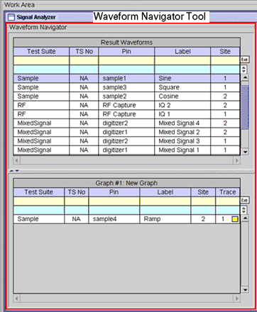

Waveform Navigator Tool
The Waveform Navigator Tool (WNT) appears between the Navigator and the Waveform Graphs Tool (WGT) in the main window. This tool displays the list of waveforms stored in the device file directory. It also displays the selected graph which corresponds to the waveforms displayed in the selected Data Display Panel in the WGT.

Each waveform listed in the WNT can be categorized as a result waveform (upper table) and by selected graph (lower table).
The result waveforms table lists the waveforms captured during the test execution. In this table, each waveform corresponds to a row of the table. The waveforms are identified by test suite name, test suite number, pin name, test label, and site number. The trace ID is not an identifier because the result waveforms category does not represent actual information displayed in the Data Display Panel of the WGT.
Waveforms in the selected graph category are those displayed in the selected (active) Data Display Panel in the WGT. These waveforms are identified by test suite name, test suite number, pin name, test label, site number, and trace ID. The small box on the right side of the trace ID corresponds to the color of the trace identified by the trace ID and which is also displayed in the WGT.
When the graph is created by the Data Display API and Test Method PUT_DEBUG API, the pin name and the test label are specified interactively using the Data Display API and Test Method PUT_DEBUG API. The other identifiers are defined automatically by each API or function. Refer to the
If the graph is created by other methods than API, for example, the multi-tone generator, the test label displays the waveform information.
The following lists the other functions of the WNT:
- Collapse/expand each table
- Collapse/expand each table column
- Resize each column
- Reorder columns
- Search by Test Suite, TS No, Pin, Label, Site, or Trace
- Sort rows
- Filter rows
- Upload waveforms (new, overwrite, overlay)
- Copy/paste waveforms
- Auto upload waveforms
- Enable/disable test suite number
- Delete selected or all waveforms
- Show/hide traces
- Highlight trace
Waveforms from external sources can also be analyzed in the Signal Analyzer by using the Data Display API or Test Method PUT_DEBUG API. Refer to the Data Display API.
Functional changes
- Introduced before SmarTest 6.3.2
- SmarTest 6.5.0: The test label displays the information of the waveform which is same as the graph ID when the Data Display Panel is iconified.
- SmarTest 7.0.3: Removed test number manager